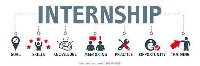

Involved in Classes
It is not enough to attend class, study, and work on projects. It is just as important to build connections with your peers. It is good to start a study group where you can rely on these people to talk about projects and study for exams with. Computer science courses are not easy, and it is important to have a support system. Also, make sure to build good relationships with your professor and tas. They are always around to help and having a good relationship with them will only build your network.
Students Collaborating. (2018). [Photograph]. https://www.gettingsmart.com/2018/10/11/collaboration-bringing-students-together-to-promote-learning-can-move/
Involved Outside of School
As stated earlier, it is very important to get involved outside of school but even more important in college. You need to make it a point of apply for internships and do well in your interviews. Outside of school experience is very important because you need to apply the knowledge you learn in school. This will be discussed further in the next page.
Internship. (2020). [Graphic]. https://www.ben.edu/college-of-education-and-health-services/public-health/mph-internship-resources.cfm